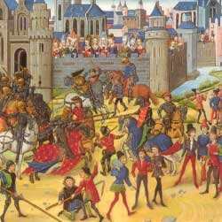

Zijn er ook Arthurromans in het Middelnederlands geschreven? Zo ja, welke?
Veruit de meeste Arthurromans zijn in het Frans geschreven aangezien in Frankrijk en het Franse deel van België veel meer ridders en kastelen stonden en die zijn natuurlijk essentieel voor ridderverhalen. Een groot deel van deze verhalen zijn naar verschillende talen vertaald en dus ook naar het Middelnederlands. Toch zijn sommige romans origineel in het Middelnederlands geschreven. Dit zijn bijvoorbeeld de volgende verhalen: Roman van Walewein, Moriaen, Walewein en Keie, Ridder metter mouwen en Torec.